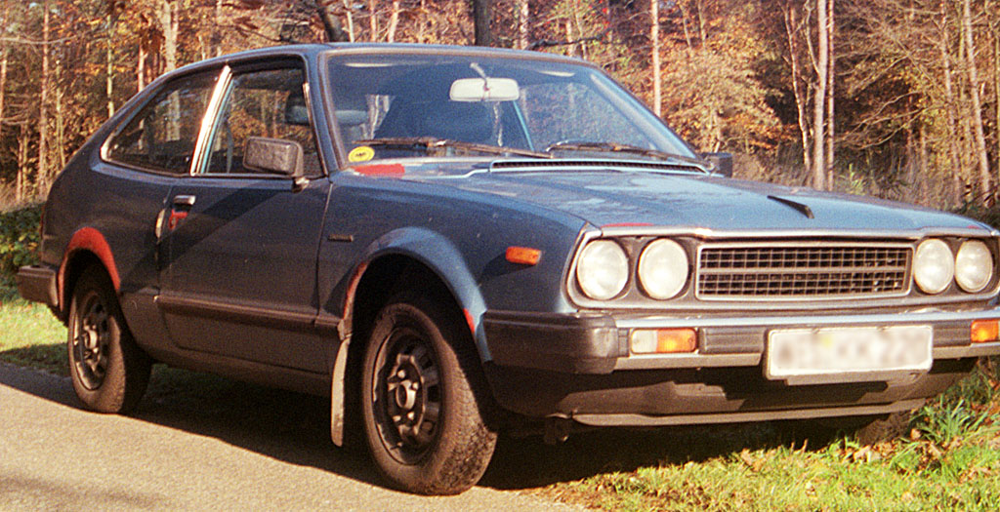

1949 — Honda Dream D-Type
.jpg)
Honda’s first complete motorcycle, the Dream D-Type, marked the beginning of Honda’s journey in two-wheeled mobility.
Source: Wikimedia Commons1963 — Honda T360 Mini Truck
The T360 was Honda’s first production automobile, a small but practical mini truck.
Source: Wikimedia Commons1963 — Honda S500 Sports Car
The Honda S500 was Honda’s first passenger sports car, showcasing innovation and engineering skill.
Source: Wikimedia Commons1965 — Honda RA272 Formula 1
The Honda RA272 achieved Honda’s first Formula One victory at the 1965 Mexican Grand Prix.
Source: Wikimedia Commons1969 — Honda CB750
Known as the world’s first mass-market superbike, the CB750 set new standards in motorcycling.
Source: Wikimedia Commons1972 — First Generation Honda Civic
The Civic became Honda’s most iconic compact car, known for efficiency and practicality.
Source: Wikimedia Commons1976 — First Generation Honda Accord
The Honda Accord debuted as a larger, more comfortable model that expanded Honda’s car lineup.
Source: Wikimedia Commons1990 — Honda NSX
The NSX was Japan’s first true supercar, combining performance with Honda’s reliability.
Source: Wikimedia Commons1999 — Honda Insight Hybrid
The Insight became Honda’s first mass-produced hybrid car, pioneering eco-friendly technology.
Source: Wikimedia Commons2000s — ASIMO Robot
Honda introduced ASIMO, a humanoid robot symbolizing Honda’s advances in robotics.
Source: Wikimedia Commons2008 — Honda FCX Clarity
The FCX Clarity was a groundbreaking hydrogen fuel cell vehicle, emphasizing sustainability.
Source: Wikimedia Commons2016 — HondaJet
The HondaJet represented Honda’s entry into aviation, combining efficiency and luxury.
Source: Wikimedia Commons2020 — Honda e
The Honda e is Honda’s compact electric city car, showcasing futuristic design and EV innovation.
Source: Wikimedia Commons